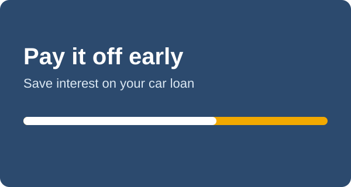

How to Pay Off a Car Loan Early and Save Interest

Paying a car loan off early can save real money. Because interest is charged on your remaining balance, every extra dollar that reduces the balance reduces future interest.
Example
On a $26,000 loan at 6.5% for 60 months, the payment is about $509. Adding $100 a month finishes the loan in about 49 months instead of 60, and saves roughly $850 in interest.
Before you pay extra
- Check for prepayment penalties. Some loans charge a fee for early payoff. Read your contract.
- Ask how extra payments are applied. Tell the lender to apply them to principal, not to the next payment.
- Keep your emergency fund. Do not empty your savings to pay a low-rate loan.
Smart ways to pay it down
- Round up each payment, for example from $509 to $550.
- Make one extra payment a year from a bonus or tax refund.
- Pay half the payment every two weeks, if the lender allows it.
- Refinance if rates have dropped or your credit has improved.
When it makes sense
Paying early helps most when your rate is high. If you have a credit card balance with a higher rate, pay that first.
Use the calculator’s yearly schedule to see how fast your balance falls.
Try it with your numbers. Use the free car loan calculator to see your monthly payment.